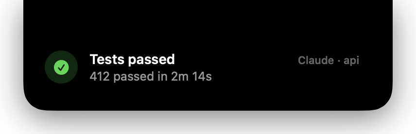

› run the test suite and fix whatever breaks ⏺ Running pnpm test… ⎿ 3 failed in checkout.spec.ts ⏺ The retry helper resets its counter on every attempt, so the timeout never fires. Fixing. ⎿ Updated src/lib/retry.ts (+6 −3) ⏺ Running pnpm test… ⎿ 412 passed in 2m 14s ⏺ All green. notch "Tests passed" -b "412 passed in 2m 14s" … ›